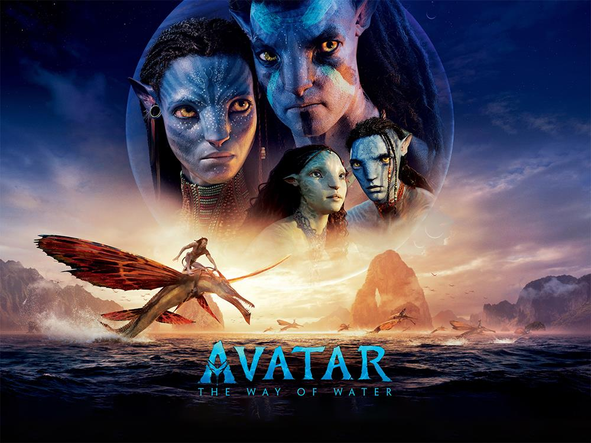

The content of this page has been slightly adapted from the Wikipedia page on Avatar: The Way of Water.
Avatar: The Way of Water
is a 2022 American epic science fiction film directed and produced by James Cameron, who co-wrote the screenplay with Rick Jaffa and Amanda Silver. It is the sequel to Avatar (2009)and the second installment in the Avatar film series.
In the film, Na'vi Jake Sully (Worthington) and his family, under renewed human threat, seek refuge with the Metkayina clan of Pandora.
With an estimated budget of $350-460 million, it is one of the most expensive films ever made.
Cast members Sam Worthington, Zoe Saldaña, Stephen Lang, Joel David Moore, CCH Pounder, Giovanni Ribisi, Dileep Rao, and Matt Gerald reprise their roles from the original film, with Sigourney Weaver returning in an additional role. New cast members include Kate Winslet, Cliff Curtis, Edie Falco, and Jemaine Clement.
On the photo we see from left to right: Sam Worthington, Zoe Saldaña, James Cameron, Sigourney Weaver, and Stephen Lang at the press conference in Tokyo.
It's never been done before and it's very tricky because our motion capture system, like most motion capture systems, is what they call optical base, meaning that it uses markers that are photographed with hundreds of cameras. The problem with water is not the underwater part, but the interface between the air and the water, which forms a moving mirror. That moving mirror reflects all the dots and markers, and ... it creates thousands of false targets, so we've had to figure out how to get around that problem, which we did. ... It's taken us about a year and a half now to work out how we're going to do it.- Cameron, on blending underwater filming and motion capture system
On July 31, 2017, it was announced that Wētā FX had commenced work on the Avatar sequels. The film heavily features underwater scenes, actually filmed underwater with the cast in performance capture. Blending underwater filming and performance capture being a feature never accomplished before, it took the team a year and a half to develop a new motion capture system. In December 2022, Wētā FX's VFX producer David Conley describe Avatar 2 as the biggest visual effects project that the company had ever undertaken, totalling nearly 3.3 billion thread powers. To cope with the huge amount of data, Wētā utilized the services of cloud storage company Amazon Web Services.